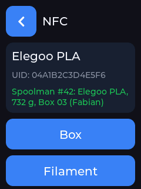
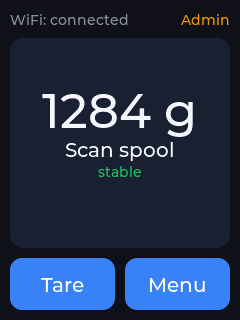

Funktionen im DetailFeatures in detail
Was die Waage kann und wie sie es macht.What the scale can do and how it does it.
- WiegeablaufWeighing flow
- Messung & KalibrierungMeasuring & calibration
- Bedienung am GerätOn-device UI
- WeboberflächeWeb UI
- Benutzer & RechteUsers & roles
- WLAN & UpdatesWi-Fi & updates
- Weitere FunktionenMore
Wiegeablauf (Differenzwägung)Weighing flow (differential weighing)
Die Waage kennt das Gewicht deiner Lagerbox nicht und muss es auch nicht kennen. Sie wiegt die Box zweimal, einmal ohne und einmal mit Spule, und rechnet die Differenz aus. Trockenmittel, andere Spulen oder Zubehör in der Box spielen keine Rolle. The scale does not need to know the weight of your storage box. It weighs the box twice, without and with the spool, and takes the difference. Desiccant, other spools or accessories in the box do not matter.
remaining = spool_gross − empty_spool
- Spule scannen: Der Spulen-Tag wird an der Scan-Zone gelesen. Spoolman liefert Hersteller, Material, Farbe und das letzte Restgewicht. Der Screen bleibt mindestens 2 Sekunden stehen. Ist die Waage nicht leer, erscheint „Waage leeren“.Scan the spool: the spool tag is read at the scan zone. Spoolman supplies vendor, material, colour and the last remaining weight. The screen stays for at least 2 seconds. If the scale is not empty it shows “Empty the scale”.
- Box auflegen: Sobald das Gewicht stabil über 50 g liegt und ein Box-Tag gelesen wird, friert die Waage W1 ein. Der Box-Name wird später zum Lagerort (
location) in Spoolman. Ab hier werden Spulen-Tags ignoriert.Place the box: as soon as the weight is stable above 50 g and a box tag is read, the scale freezes W1. The box name later becomes the Spoolmanlocation. From here on, spool tags are ignored. - Spule einstellen: Die Anzeige zeigt das Gewicht relativ zu W1. Ist es um mindestens 50 g gestiegen und stabil, wird W2 erfasst.Insert the spool: the display shows weight relative to W1. Once it rose by at least 50 g and is stable, W2 is captured.
- Bestätigen: Box, Spule und Restgewicht in Gramm werden angezeigt. Das Leerspulengewicht kommt aus Spoolman (Spule, dann Filament, dann Hersteller). Fehlt es, kannst du es mit −10/+10 eingeben (Startwert 250 g).Confirm: box, spool and remaining weight in grams are shown. The empty spool weight comes from Spoolman (spool, then filament, then vendor). If missing you can enter it with −10/+10 (default 250 g).
- Speichern: Das Update geht an Spoolman. Bei Erfolg oder Einreihen in die Warteschlange erscheint „Gespeichert“. Danach „Box entnehmen“ und zurück zu Home, sobald die Waage leer ist.Save: the update goes to Spoolman. On success, or when queued, “Saved” is shown. Then “Remove box”, and back to Home once the scale is empty.
PlausibilitätsprüfungenPlausibility checks
| Rest < −20 gRest < −20 g | Fehler „Leerspulengewicht prüfen“. Speichern ist ausgeblendet, [Nochmal] startet neu.Error “Check empty spool weight”. Save is hidden, [Retry] starts over. |
|---|---|
| −20 bis 0 g−20 to 0 g | Wird auf 0 gesetzt, mit Hinweis.Clamped to 0, with a notice. |
| Zu schwerToo heavy | Rest über Anfangsgewicht + 50 g: Warnung, Speichern nur nach Bestätigung.Remaining above initial weight + 50 g: warning, saving possible after confirmation. |
| ÜberlastOverload | Über 4500 g Gesamtgewicht erscheint „Überlast“ (die Zelle verträgt 5 kg).Above 4500 g total, “Overload” is shown (the cell is rated for 5 kg). |
| Timeout | Jeder Wartezustand läuft nach 120 s ab und führt zurück zu Home.Every waiting state times out after 120 s and returns to Home. |


Messung & KalibrierungMeasuring & calibration
- Stabilitätserkennung: Der HX711 liefert 10 Werte pro Sekunde. Über ein Fenster von 10 Werten (ca. 1 s) gilt das Gewicht als stabil, wenn Maximum minus Minimum höchstens 1,0 g beträgt. Ausgegeben wird der Mittelwert.Stability detection: the HX711 delivers 10 samples per second. Over a window of 10 samples (about 1 s) the weight counts as stable when max minus min is at most 1.0 g. The mean is shown.
- „Leer“ heißt stabil und höchstens 5 g Betrag. „Objekt hinzugefügt“ heißt stabil und mindestens 50 g über der Referenz. Alle Schwellen sind einstellbar.“Empty” means stable and at most 5 g absolute. “Object added” means stable and at least 50 g above the reference. All thresholds are configurable.
- Tara am Gerät oder in der Weboberfläche. Beim Start wird automatisch genullt, wenn die Waage leer und stabil ist.Tare on the device or in the web UI. At boot the scale zeroes itself when empty and stable.
- Kalibrierung in zwei Schritten: Waage leeren und Tara, dann ein bekanntes Gewicht auflegen (Startwert 100 g) und den Wert einstellen. Der Faktor wird im Flash gespeichert.Calibration in two steps: empty the scale and tare, then place a known weight (default 100 g) and set its value. The factor is stored in flash.
- Drift-Nachführung: Auf dem Home-Screen wird der Nullpunkt nachgeführt, aber nur bei leerer, stabiler Waage und weniger als 2 g Abweichung.Drift tracking: on the Home screen the zero point follows slow drift, only when empty, stable and the deviation is under 2 g.
- Fehlerhafte Rohwerte (0, −1, Sättigung), wie sie ein nicht angeschlossener HX711 liefert, werden verworfen und im Log gemeldet.Invalid raw readings (0, −1, saturation), as produced by a disconnected HX711, are discarded and reported in the log.
Bedienung am GerätOn-device UI
Das 240×320-Display ist ein Single-Touch-Panel. Buttons sind mindestens 48 px hoch, pro Screen gibt es eine Hauptaktion. Die Texte folgen der Gerätesprache oder der Sprache des angemeldeten Benutzers.The 240×320 display is single-touch. Buttons are at least 48 px tall and every screen has one main action. Texts follow the device language or the language of the signed-in user.





- Home: Live-Gewicht, Statusleiste (WLAN, Spoolman, ausstehende Updates, Benutzer), [Tara] und [Menü].Home: live weight, status bar (Wi-Fi, Spoolman, pending updates, user), [Tare] and [Menu].
- Menü: Meine Sprache, Einstellungen (Kalibrierung, WLAN, Display, Sprache, Touch-Kalibrierung) und NFC (Box-Tag und Filament-Tag schreiben). Einstellungen und NFC verlangen den Admin.Menu: My language, Settings (calibration, Wi-Fi, display, language, touch calibration) and NFC (write box and filament tags). Settings and NFC require the admin.
- Admin-Anmeldung mit Ziffernblock (Geräte-PIN) oder durch Auflegen des Admin-Tags. Sie endet nach 5 Minuten ohne Bedienung.Admin sign-in with a number pad (device PIN) or by placing the admin tag. It ends after 5 minutes of inactivity.
- Bildschirmschoner: Nach einstellbarer Zeit wird auf 10 % gedimmt und später ausgeschaltet (Standard 5/15 Minuten). Berührung, Tag-Scan oder Gewichtsänderung über 3 g wecken das Display.Screen saver: after a configurable time the display dims to 10 % and later turns off (default 5/15 minutes). Touch, a tag scan or a weight change above 3 g wakes it.
WeboberflächeWeb UI
Die Waage liefert eine eigene Webseite aus, erreichbar über http://filamentwaage.local oder die IP-Adresse. Sie ist zweisprachig und verlangt eine Anmeldung.The scale serves its own web page at http://filamentwaage.local or its IP address. It is bilingual and requires sign-in.
ÜbersichtOverview
Live-Gewicht, Status, aufliegender Tag, Tara.Live weight, status, tag on the scale, tare.
KalibrierungCalibration
Tara, Referenzgewicht, Schwellen.Tare, reference weight, thresholds.
BenutzerUsers
Anlegen, PIN setzen, Rechte, Benutzer-Tag schreiben.Create, set PIN, permissions, write user tag.
Filament-KatalogFilament catalog
Typen, Hersteller, Farben pflegen, Abgleich mit Spoolman.Maintain types, vendors, colours, sync with Spoolman.
Spoolman
Adresse, Status, Warteschlange senden oder verwerfen.Address, status, send or discard the queue.
WLAN, Log, SystemWi-Fi, log, system
Zugangsdaten, Live-Log (160 Zeilen), Bildschirmschoner, Neustart.Credentials, live log (160 lines), screen saver, reboot.
Benutzer & RechteUsers & roles
| Admin | Darf alles: Einstellungen, Benutzer, Katalog, Sperre. Webseite mit Name admin und Passwort, am Gerät mit PIN oder Admin-Tag.Can do everything: settings, users, catalog, lock. Web sign-in as admin with the password, on the device with PIN or admin tag. |
|---|---|
| BenutzerUser | Meldet sich am Gerät per NFC-Tag an (Name wird als owner an die Spule geschrieben), auf der Webseite mit Name und PIN (4–6 Ziffern). Darf wiegen, die eigene Sprache und PIN ändern. Der Admin kann einzelne Rechte freigeben: Tara und Filament (Katalog pflegen).Signs in on the device via NFC tag (the name is written to the spool as owner), on the web with name and PIN (4–6 digits). Can weigh and change own language and PIN. The admin can grant single permissions: Tare and Filament (maintain the catalog). |
| Generic | Nur wiegen und NFC lesen, ohne Tara und Sprache. Der Admin kann das Konto abschalten oder mit einer PIN schützen.Only weigh and read NFC, no tare, no language. The admin can disable the account or protect it with a PIN. |
Wichtig: Standard-Zugang ist Admin-Passwort „Filament“ und Geräte-PIN „1234“. Die Webseite warnt, solange sie aktiv sind. Bitte direkt ändern.Important: defaults are admin password “Filament” and device PIN “1234”. The web UI warns while they are active. Please change them right away.
- PINs und Passwort liegen nur als Salted-SHA-256-Hash im Flash.PINs and the password are stored only as salted SHA-256 hashes in flash.
- Sitzungen: HttpOnly-Cookie, SameSite=Strict, 30 Minuten Inaktivität, höchstens 6 gleichzeitig.Sessions: HttpOnly cookie, SameSite=Strict, 30 minutes of inactivity, at most 6 at a time.
- 5 Fehlversuche sperren die Anmeldung für 30 Sekunden, am Gerät ebenso.5 failed attempts lock sign-in for 30 seconds, on the device too.
- Ein gelöschter Benutzer, eine geänderte PIN oder ein neues Passwort beenden die betroffenen Sitzungen sofort.A deleted user, a changed PIN or a new password ends the affected sessions at once.
- Der Admin kann die Sperre abschalten. Dann darf jeder im Netzwerk alles ändern.The admin can switch the lock off. Then everyone on the network may change everything.
WLAN & UpdatesWi-Fi & updates
- Einrichtung wie bei Tasmota: Ohne gespeichertes WLAN startet der Hotspot
Filamentwaage-Setup. Ein Captive Portal leitet das Handy automatisch auf die Einrichtungsseite. Der Hotspot startet auch, wenn eine Minute lang keine Verbindung klappt, und endet nach einer Minute stabiler Verbindung.Tasmota-style setup: without stored Wi-Fi theFilamentwaage-Setuphotspot starts. A captive portal sends your phone to the setup page. The hotspot also starts when connecting fails for a minute and stops after a minute of stable connection. - Updates per WLAN (OTA): Das erste Flashen geht per USB, danach Firmware und Dateisystem über das Netzwerk.OTA updates: first flash via USB, afterwards firmware and file system over the network.
- Theme per Datei: Farben, Radien, Abstände und Schriftgrößen stehen in
data/theme.jsonund lassen sich ohne neue Firmware ändern.Theme via file: colours, radii, spacing and font sizes live indata/theme.jsonand can be changed without new firmware. - Serielle Notbedienung (115200 Baud):
wifi set,wifi reset,wifi status,admin reset,reboot.Serial recovery (115200 baud):wifi set,wifi reset,wifi status,admin reset,reboot.
Weitere FunktionenMore
- Offline-Warteschlange: Fehlt das Netz oder antwortet Spoolman mit einem 5xx-Fehler, wird das Update gespeichert und später automatisch nachgeholt. Je Spule bleibt nur das neueste. Maximal 100 Einträge.Offline queue: if the network is down or Spoolman answers with a 5xx error, the update is stored and sent later. Only the newest per spool is kept, 100 entries at most.
- Zeit per NTP (Europe/Berlin) für Zeitstempel in der Warteschlange.NTP time (Europe/Berlin) for queue timestamps.
- Unit-Tests für NDEF, Tags, Warteschlange und Wiegelogik laufen am Rechner (
pio test -e native).Unit tests for NDEF, tags, queue and weighing logic run on the host (pio test -e native). - Noch nicht umgesetzt: Screen „Neue Box anlegen“ bei leerem Box-Tag (Box-Tags schreibst du im Menü unter NFC) und Längenanzeige in Metern.Not implemented yet: a “new box” screen for empty box tags (write box tags in the NFC menu) and length display in metres.